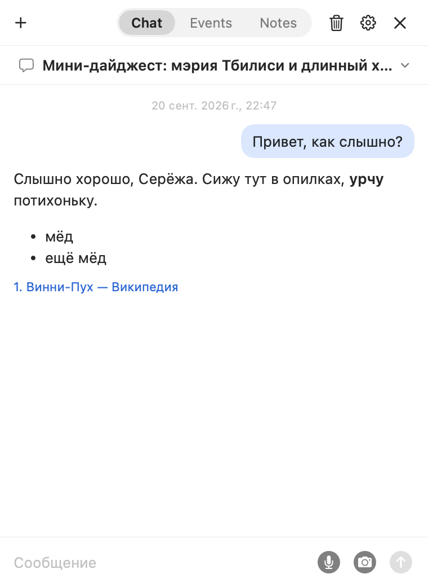
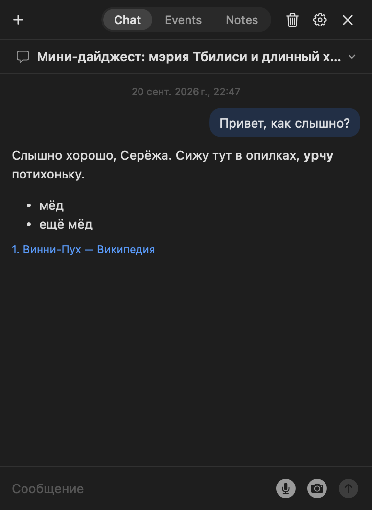
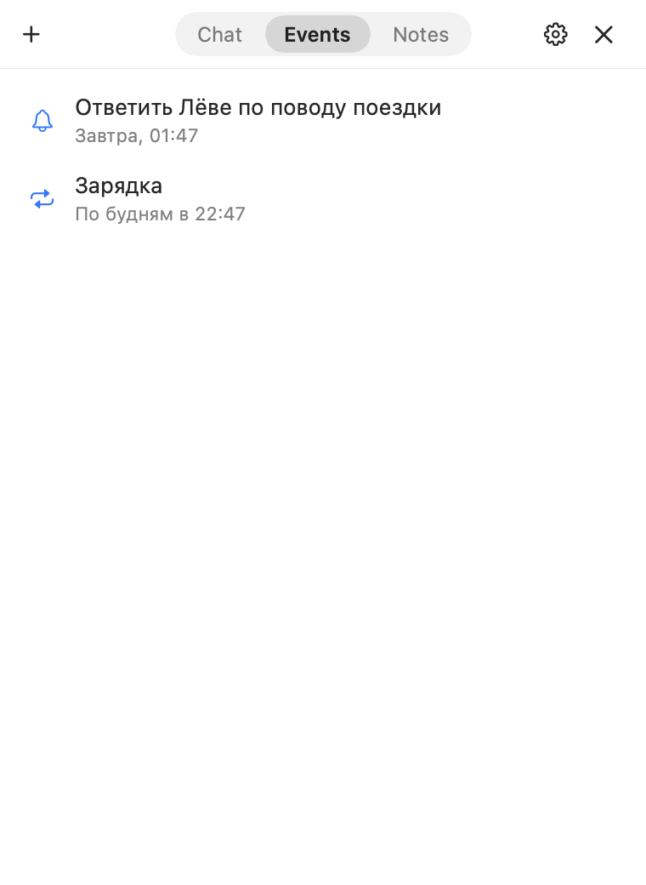
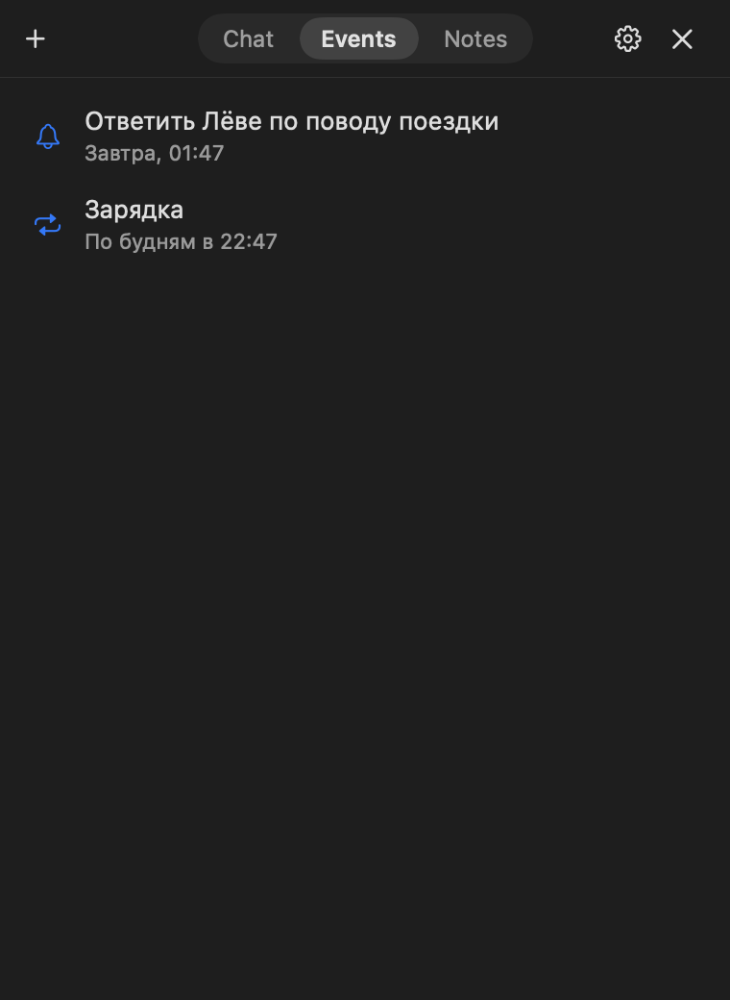
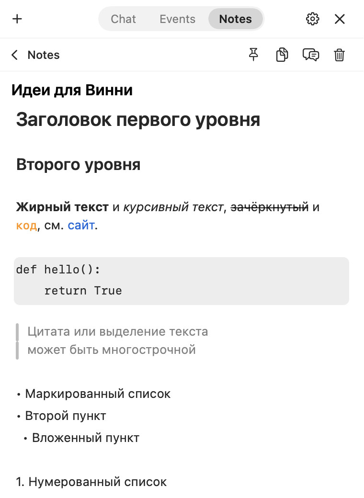
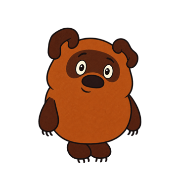

Винни-Пухна рабочем столе Mac.По клику открываетсячат с Claude.
Слушает по шорткату, ставит напоминания, выполняет быстрые команды, ведёт заметки. Окно чата закрывается, медведь остаётся в углу экрана.
Установи и настрой на этом Mac приложение Winnie – десктоп-питомца с чатом Claude (открытый код, MIT). Репозиторий: https://github.com/nel-feelingood/winnie ЧАСТЬ 1. УСТАНОВКА 1. Проверь, что это macOS 14 или новее и что стоят Command Line Tools (xcode-select -p). Если их нет, запусти xcode-select --install и попроси меня дождаться конца установки. 2. Клонируй репозиторий в ~/Developer/winnie. Если папка уже есть – сделай в ней git pull. 3. Запусти ./scripts/install.sh. Скрипт соберёт приложение, положит его в /Applications и запустит. Первая сборка идёт пару минут. 4. Убедись, что /Applications/Winnie.app существует и процесс Winnie запущен. Если сборка упала – покажи ошибку и предложи, как её исправить. ЧАСТЬ 2. НАСТРОЙКА Иди по шагам по порядку. Перед каждым шагом коротко объясни, что он даёт, и спроси меня: «Подключим сейчас или позже?» Если я отвечаю «позже» – переходи к следующему шагу и запомни, что отложено. Правила для всей настройки: - Никогда не проси меня присылать ключи, токены и секреты в чат и не вводи их сам. Я вставляю их только в окно настроек Winnie – оттуда они попадают в Связку ключей macOS. - Твоя роль – вести меня: называй одно действие за раз («открой…», «нажми…») и жди, пока я отвечу «готово» или опишу, что вижу. - Названия пунктов на сторонних сайтах могут немного отличаться – ориентируйся по смыслу. - Системные настройки безопасности сам не меняй, только объясняй, что нажать. 5. Claude API – нужен, чтобы чат вообще работал. - На console.anthropic.com: пополнить баланс (Billing), затем API Keys → Create Key → скопировать ключ. - В Winnie: настройки (открываются сами при первом запуске, иначе – шестерёнка в окне чата) → раздел «API» → поле Claude → вставить ключ → «Сохранить». Если macOS спросит про доступ к Связке ключей – «Разрешать всегда». - Проверка: кликнуть по Винни и написать «привет» – он должен ответить. 6. Gmail – по желанию; Винни сможет читать почту и делать сводки. Доступ только на чтение, сервис Google бесплатный. - На console.cloud.google.com: создать проект → APIs & Services → Library → включить Gmail API. - OAuth consent screen: тип External, заполнить название и почту, в Test users добавить свой адрес. - Credentials → Create credentials → OAuth client ID → тип Desktop app → появятся Client ID и Client Secret. - В Winnie: «API» → «Почта · Gmail» → вставить Client ID и Client Secret → «Войти» → разрешить доступ в браузере. Предупреждение Google о непроверенном приложении – это нормально, приложение моё собственное. - Предупреди меня: пока проект в статусе Testing, входить придётся заново раз в 7 дней; кнопка Publish app на экране согласия это убирает. - Проверка: спросить Винни «что важного в почте?». 7. Telegram-бот – по желанию; тот же Винни в телефоне и напоминания в Telegram. - В Telegram написать @BotFather → /newbot → придумать имя и username → получить токен. - В Winnie: «API» → «Telegram» → вставить токен → «Подключить бота» → появится шестизначный код. - Отправить этот код своему боту в личном чате – бот привяжется ко мне и больше никому отвечать не будет. - Проверка: написать боту «привет». Напомни: бот работает, пока Winnie запущен на Mac. 8. Разрешения macOS. Объясни, что система спросит сама: уведомления – при запуске (нужны для напоминаний); микрофон и распознавание речи – при первом нажатии на микрофон; запись экрана – при первом скриншоте, после выдачи Winnie нужно перезапустить. 9. Итог. Коротко напиши: что установлено, что подключено, что отложено и как к этому вернуться (настройки Winnie → «API»; подробная инструкция: https://nel-feelingood.github.io/winnie/install.html). Упомяни, что MCP-серверы, свои API и сертификат «Winnie Dev» для пересборок описаны там же.
Вставляется в Claude Code или другого агента с терминалом. Агент собирает приложение и помогает с настройкой. Установка вручную
macOS 14+ · ключ Anthropic API · открытый код, MIT







Что он делает
Три вкладки
Одноразовые диалоги
- Быстрые команды. Кнопки в пустом чате. У каждой подпись и своя инструкция.
- Голос. Диктовка по шорткату из любого приложения, ответ вслух.
- Скриншот. Область экрана прикладывается к вопросу.
Напоминания
- Одной фразой. «Через 40 минут», «в пятницу в 10», «каждый будний день».
- Уведомление приходит всегда. Даже когда медведь спрятан.
- Правка словами. «Отложи на час», «удали».
Заметки
- Markdown-файлы. Лежат на диске, открываются чем угодно.
- Редактор без разметки. Меню по /, чекбоксы, картинки.
- Медведь пишет сам. «Запиши в Идеи», «что у меня в заметке про отпуск».
Как его вызвать
СлушатьИз любого приложения. Первое нажатие включает микрофон, второе выключает.
Показать или спрятатьОткрывает последний чат с курсором в поле ввода.
По медведюОткрывает и закрывает чат. При наведении появляется кнопка нового диалога.
Оба шортката настраиваются.
Размер окна
Окно чата тянется за край и запоминает размер. Здесь тоже: правый нижний угол.
380 × 520
от 320 × 360 до 760 × 1000
Кадры
Где хранятся данные
- Чаты, заметки и память – файлы на MacПапка ~/Library/Application Support/Winnie.
- Ключи и токены – в Связке ключей macOSВ файлы настроек и в репозиторий они не попадают.
- Запросы идут напрямую в Anthropic APIПромежуточных серверов и аналитики нет.
- Код открытЛицензия MIT. Репозиторий на GitHub
Вопросы
Сколько стоит
Приложение бесплатное. Запросы к Claude оплачиваются по тарифам Anthropic, расходы видны в настройках.
Почему нет готовой сборки
У проекта нет подписи Apple. Сборка из исходников занимает несколько минут, Xcode не нужен.
Можно ли заменить персонажа
Да. Кадры – 13 PNG-файлов в папке приложения.
Работает ли без интернета
Нет, отвечает Claude. Заметки и напоминания остаются доступны.
Написать автору
Кнопка открывает почтовую программу с готовым письмом. Сайт ничего не отправляет сам.